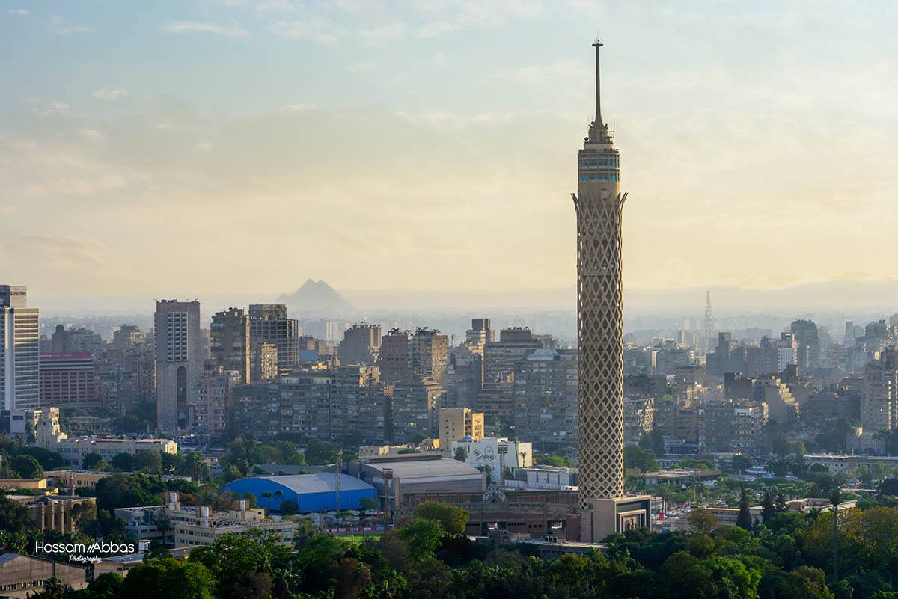

Cairo Tower
"This city looks quite different from above than what one sees from below." The famous Egyptian actor, Adel Emam, said this to describe Cairo. It is quite expressive as the city looks quite different from above, especially from the top of the Cairo Tower. Many tourists from all over the world, especially Arabs, visit Cairo Tower when they come to Egypt in order to enjoy the panoramic views the tower offers of the city of the thousand minarets. The tower consists of 16 floors which were built on a huge Aswan granite base which the Pharos used to build fascinating temples and structures. The Cairo Tower is considered an architectural gem and is built in the shape of the most important plant in the lives of the ancient Egyptians, the lotus. This serves as a demonstration of ancient Egyptian civilization.
The History of Cairo Tower
Cairo Tower was built between the years of 1956 and 1961 with the help of more than 500 Egyptian workers. It was designed by the Egyptian Engineer Na'oum Shobaib. The Tower was built out of concrete and iron in order to depict the lotus, a flower which the ancient Egyptians used to produce papyrus. The length of the tower is 187 meters which is 43 meters higher than the great pyramid of Cheapos. It is located in the middle of Cairo at the edge of Zamalek Island.
Cairo Tower was built in the reign offormer Egyptian president Gamal Abdel Nasser. It cost 6 million pounds at the time it was built in the late 60s. This sum of money was given to the Egyptian government by USA to stop the Egyptians from supporting the Algerian uprising against the French occupation. This was why the Tower had two names: the American name "the fork in the back of Nasser" and the Egyptian name "stopping Roosevelt".
However, the six million pounds didn't affect the Egyptian attitude towards supporting other Arab nations and although Egypt needed that money immensely to rebuild its infrastructure, Nasser insisted on building the Cairo Tower with the American money to stand as a clear everlasting proof of the union and alliance Egypt has with the Arab world.
Restoration of the Tower
The Cairo Tower went through a huge restoration between 2006 and 2008. The operation was implemented by Arab Contractors and cost 15 million pounds. The work included restoring the iron body of the tower, installing emergency stairs, and putting in a new elevator for visitors. It also included upgrading and strengthening the entrance of the tower and renewing and painting the outer body of the tower.
The area of the Cairo Tower was extended to reach 400% of the old surface area and was used to reach 1,145 meters by adding four new floors. This enables the Cairo Tower to host 700 visitors at the same time instead of only 120 visitors. This is besides being lighted by a new (LED) system.